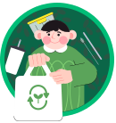
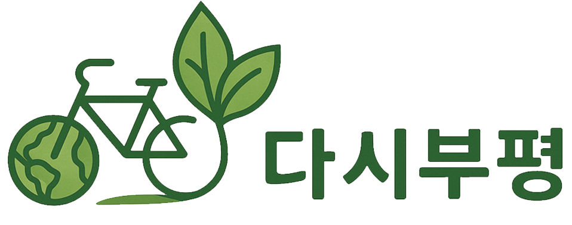
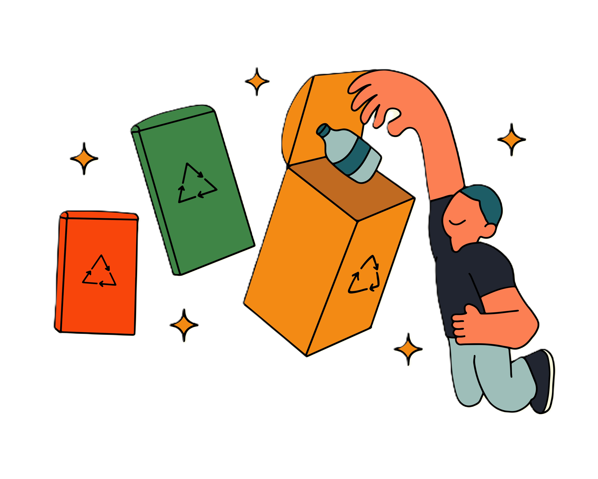
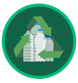
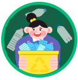
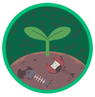

reduce
불필요한 것은 줄이고



reduce
불필요한 것은 줄이고

reuse
한 번 더 사용하고

recycle
올바르게 재활용하고

recovery
에너지 만들고
페트병은 라벨을 제거 후 내용물을 헹궈 구겨서 배출해 주세요. 이때 투명 페트병만 별도로 분리배출합니다.

페트병은 라벨을 제거 후 내용물을 헹궈 구겨서 배출해 주세요. 이때 투명 페트병만 별도로 분리배출합니다.
페트병은 라벨을 제거 후 내용물을 헹궈 구겨서 배출해 주세요. 이때 투명 페트병만 별도로 분리배출합니다.
페트병은 라벨을 제거 후 내용물을 헹궈 구겨서 배출해 주세요. 이때 투명 페트병만 별도로 분리배출합니다.
페트병은 라벨을 제거 후 내용물을 헹궈 구겨서 배출해 주세요. 이때 투명 페트병만 별도로 분리배출합니다.